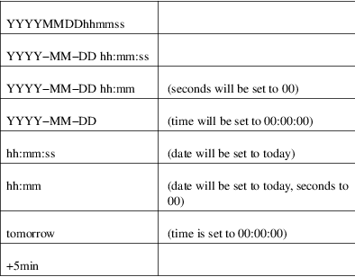

rtcwake − enter a system sleep state until specified wakeup time
rtcwake [options] [−d device] [−m standby_mode] {−s seconds|−t time_t}
This program is used to enter a system sleep state and to automatically wake from it at a specified time.
This uses cross−platform Linux interfaces to enter a system sleep state, and leave it no later than a specified time. It uses any RTC framework driver that supports standard driver model wakeup flags.
This is normally used like the old apmsleep utility, to wake from a suspend state like ACPI S1 (standby) or S3 (suspend−to−RAM). Most platforms can implement those without analogues of BIOS, APM, or ACPI.
On some systems, this can also be used like nvram−wakeup, waking from states like ACPI S4 (suspend to disk). Not all systems have persistent media that are appropriate for such suspend modes.
Note that alarm functionality depends on hardware; not every RTC is able to setup an alarm up to 24 hours in the future.
The suspend setup may be interrupted by active hardware; for example wireless USB input devices that continue to send events for some fraction of a second after the return key is pressed. rtcwake tries to avoid this problem and it waits to the terminal to settle down before entering a system sleep.
−A, −−adjfile file
Specify an alternative path to the adjust file.
−a, −−auto
Read the clock mode (whether the hardware clock is set to UTC or local time) from the adjtime file, where hwclock(8) stores that information. This is the default.
−−date timestamp
Set the wakeup time to the value of the timestamp. Format of the timestamp can be any of the following:

−d, −−device device
Use the specified device instead of rtc0 as realtime clock. This option is only relevant if your system has more than one RTC. You may specify rtc1, rtc2, ... here.
−l, −−local
Assume that the hardware clock is set to local time, regardless of the contents of the adjtime file.
−−list−modes
List available −−mode option arguments.
−m, −−mode mode
Go into the given standby state. Valid values for mode are:
standby
ACPI state S1. This state offers minimal, though real, power savings, while providing a very low−latency transition back to a working system. This is the default mode.
freeze
The processes are frozen, all the devices are suspended and all the processors idled. This state is a general state that does not need any platform−specific support, but it saves less power than Suspend−to−RAM, because the system is still in a running state. (Available since Linux 3.9.)
mem
ACPI state S3 (Suspend−to−RAM). This state offers significant power savings as everything in the system is put into a low−power state, except for memory, which is placed in self−refresh mode to retain its contents.
disk
ACPI state S4 (Suspend−to−disk). This state offers the greatest power savings, and can be used even in the absence of low−level platform support for power management. This state operates similarly to Suspend−to−RAM, but includes a final step of writing memory contents to disk.
off
ACPI state S5 (Poweroff). This is done by calling '/sbin/shutdown'. Not officially supported by ACPI, but it usually works.
no
Don’t suspend, only set the RTC wakeup time.
on
Don’t suspend, but read the RTC device until an alarm time appears. This mode is useful for debugging.
disable
Disable a previously set alarm.
show
Print alarm information in format: "alarm: off|on <time>". The time is in ctime() output format, e.g., "alarm: on Tue Nov 16 04:48:45 2010".
−n, −−dry−run
This option does everything apart from actually setting up the alarm, suspending the system, or waiting for the alarm.
−s, −−seconds seconds
Set the wakeup time to seconds in the future from now.
−t, −−time time_t
Set the wakeup time to the absolute time time_t. time_t is the time in seconds since 1970−01−01, 00:00 UTC. Use the date(1) tool to convert between human−readable time and time_t.
−u, −−utc
Assume that the hardware clock is set to UTC (Universal Time Coordinated), regardless of the contents of the adjtime file.
−v, −−verbose
Be verbose.
−h, −−help
Display help text and exit.
−V, −−version
Print version and exit.
Some PC systems can’t currently exit sleep states such as mem using only the kernel code accessed by this driver. They need help from userspace code to make the framebuffer work again.
/etc/adjtime
The program was posted several times on LKML and other lists before appearing in kernel commit message for Linux 2.6 in the GIT commit 87ac84f42a7a580d0dd72ae31d6a5eb4bfe04c6d.
The program was written by David Brownell <dbrownell@users.sourceforge.net> and improved by Bernhard Walle <bwalle@suse.de>.
This is free software. You may redistribute copies of it under the terms of the GNU General Public License <http://www.gnu.org/licenses/gpl.html>. There is NO WARRANTY, to the extent permitted by law.
adjtime_config(5), hwclock(8), date(1)
For bug reports, use the issue tracker at <https://github.com/util−linux/util−linux/issues>.
The rtcwake command is part of the util−linux package which can be downloaded from Linux Kernel Archive <https://www.kernel.org/pub/linux/utils/util−linux/>.